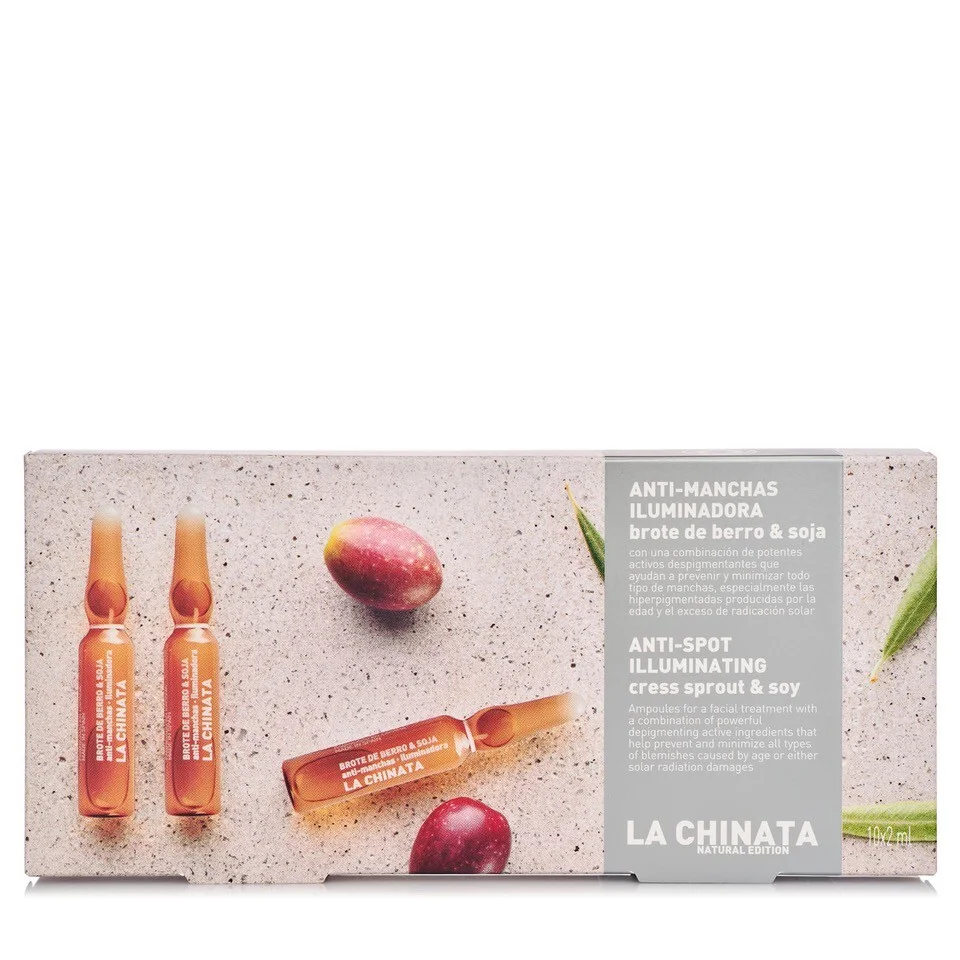

Cosmetic Made in Spain
聯繫我們
產品展示
La chinata防斑照明安瓿与芥芽和大豆

133.20 Kr Content: 10*2ml
防斑照明安瓿是帮助预防和减少各种类型的斑点的解决方案，特别是由年龄和过度的太阳辐射引起的色素沉着。 它们由豆芽和大豆制成，以及强大的脱色活性成分的组合，有助于预防和减少所有类型的斑点，特别是由年龄和过度的太阳辐射引起的色素沉着斑。含有稳定的维生素C，防止皮肤氧化，带来光泽，统一脸部色调;橄榄叶提取物也有抗氧化、抗刺激和抗炎的作用。
Vida Copyright © 2024 All rights reserved